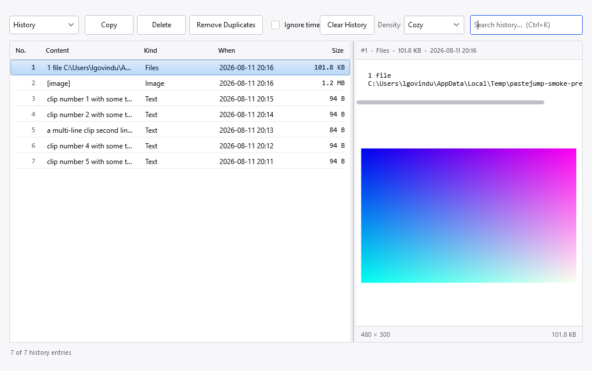
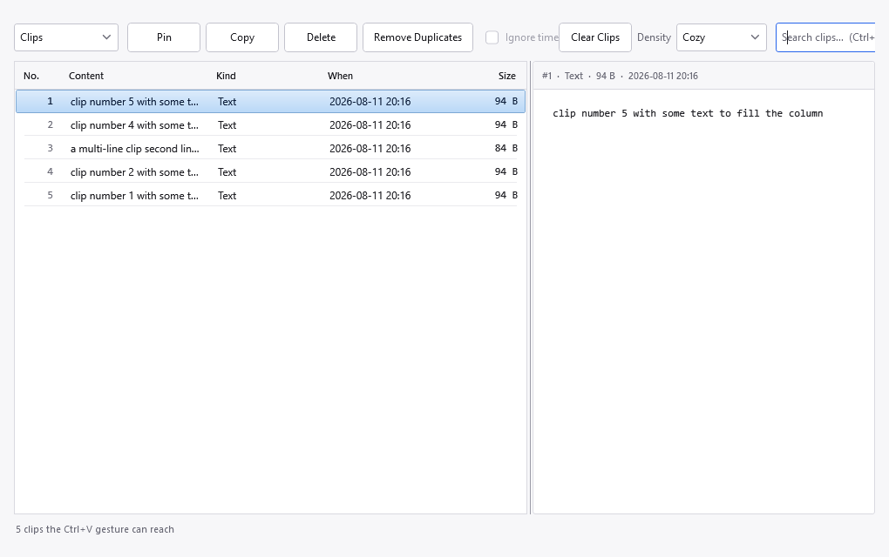

Left-click the tray icon to open it. One window shows both stores — the switch at the top-left chooses which.

The History view. The row selected here is a copy of an image file, so the preview pane shows the picture below the path, with its resolution and size along the bottom.
The combo box on the left switches between Clips and History. Both use the same columns, which is the point: seeing them side by side is what makes the difference legible rather than something to be explained. See Clips and history for what each one is.
Clips view adds a Pin button and renames Clear History to Clear Clips, so the button always names what it will actually empty.

The Clips view: the same columns over the other store, with Pin added. The status line counts what the gesture can reach rather than what has been logged.
| Button | What it does |
|---|---|
| Pin (Clips only) | Pins or unpins the selected clips. Pinned clips sort first and survive Delete All. |
| Copy | Puts the selected entry back on the clipboard and adds it to the stack as the newest clip, so
Ctrl+V offers it first. Enter, or a double-click, does the same. |
| Delete | Removes the selected rows from whichever store is shown. The Delete key does the same. |
| Remove Duplicates | Collapses entries that are an exact duplicate of another, keeping one of each. Acts on the store being shown. See below. |
| Clear History / Clear Clips | Empties the store being shown. Asks first, and says plainly that the other store is not affected. |
The box on the right filters the list as you type. Ctrl+K,
Ctrl+E or Ctrl+F jumps to it; Esc clears
it. History search is full-text and matches on word prefixes, so conn finds
connection.
The status line at the bottom says how many rows are shown against how many exist, and says so explicitly when it is showing a subset rather than leaving two numbers to be compared. How many rows are loaded at once is under Settings, History.
Selecting a row shows it on the right: the text, the image, or the list of copied files. When the selected entry is a copy of an image file, the pane shows the picture below the path, with its resolution on the left and its size on the right.
Importing from Clipjump was not idempotent before this version: the dialog said entries already imported were skipped, and nothing checked. Anyone who ran the import more than once has a copy of every entry per run — four runs meant four of everything.
Remove Duplicates repairs that. It asks first, and it is precise about what counts as a duplicate:
| In History | An entry is judged by its timestamp, its kind, its text and its image. Two screenshots taken
in the same second are therefore not mistaken for one another, even though both preview as
[image]. The oldest of each set is kept, because a history entry is a record of when
something was copied. |
| In Clips | A clip is judged by its content, which is the same test the gesture uses to recognise a re-copy. The newest of each set is kept, and a pinned clip always wins — its position in the stack is what you navigate by, and a pin is a deliberate act. |
Ignore time, beside the button, widens what counts as a duplicate: with it ticked an entry is judged by its kind, its text and its image alone, so the same thing copied on Monday and again today counts as one and the most recent is kept. Without it the timestamp is part of the match, so those two are left alone and the oldest of each set survives. The two keep opposite rows on purpose — when every copy in a group happened at the same instant they are interchangeable, and when they did not, the recent one is the one whose date tells you something true.
It removes far more than the ordinary sweep, since a phrase you paste every day collapses to a single entry, which is why it is not the default. It applies to history only: a clip is judged by content already, so the box is greyed out in the Clips view.
Imports from this version onwards cannot create duplicates in the first place, so this is a repair tool rather than routine maintenance. Running it on a healthy store reports that it found nothing.
The Density control sets row spacing: Compact fits the most rows, Roomy is the easiest to hit with a mouse. It is the same setting as the one under Settings, Appearance — it is repeated here because this is the window whose appearance it changes, and each place follows the other while both are open.